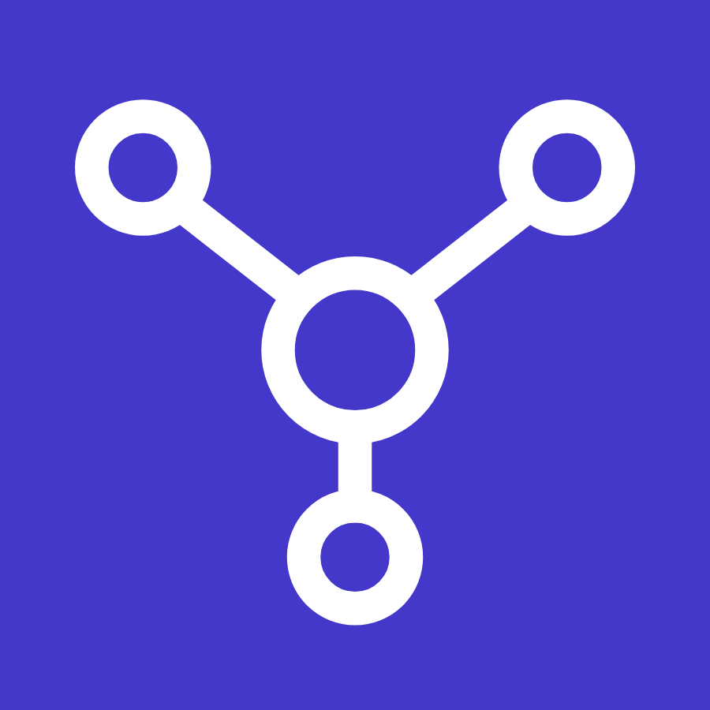
AltaBPO
Servidor MCP — Conecta agentes de IA a datos de Odoo en vivo
Convierte Odoo en un servidor de herramientas listo para IA. Expón tu ERP de forma segura a Claude, ChatGPT, Gemini, Cursor, n8n, LangChain y cualquier cliente compatible con MCP a través de un único endpoint — con OAuth 2.0, tokens con alcance, registros de auditoría, herramientas BI, páginas de portal, trabajos asíncronos y generación de módulos impulsada por IA.
Odoo 19 OPL-1 34+ herramientas MCPAltaBPO
AltaBPO desarrolla soluciones a medida sobre Odoo, con foco en la localización peruana y en la automatización de procesos administrativos. Módulos fiables, probados y mantenidos.
Vista previa de la demo
Mira el Servidor MCP en acción
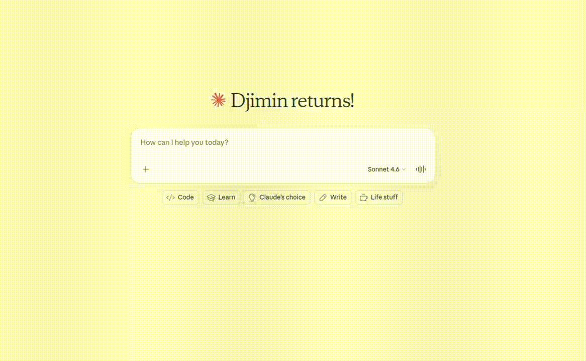
Guía de administración
¿Cómo realizas el mantenimiento en Odoo?
El Servidor MCP incluye controles de administración integrados — gestiona tokens, audita sesiones, vacía la caché, define políticas de retención y prueba la conectividad con Redis — todo desde la Configuración de Odoo.

Casos de uso
Lo que puedes construir con MCP + Odoo
Convierte Odoo en un servidor de herramientas listo para IA. Conecta Claude, ChatGPT, Gemini, Cursor/Claude Code, n8n, LangChain, crewAI (y más) a datos de Odoo en vivo — con gobernanza y registros de auditoría.
Del prompt al tablero
Tableros dentro de Odoo
Genera tarjetas KPI, tablas y visualizaciones interactivas de ECharts — con filtros y navegación en detalle hasta los registros de Odoo.
Ejemplo: "Crea un tablero ejecutivo de ventas con los ingresos del año hasta la fecha por mes y los principales clientes."
Del prompt al portal
Páginas públicas con datos de Odoo en vivo
Crea páginas de portal compartibles que se renderizan en el servidor y se mantienen siempre actualizadas (KPI, gráficos, tablas).
Ejemplo: "Crea una página de calendario de envíos en /mcp-page/shipping con las entregas salientes de hoy."
Informes / Listo para BI
Tabla dinámica, series de tiempo, embudo, cohorte
Ayudantes especializados para consultas de análisis: tabla dinámica, series de tiempo, top-N, cohorte, embudo y exportación en una sola llamada.
Ejemplo: "Los 10 principales clientes por ingresos este trimestre, agrupados por vendedor."
Del prompt al flujo de trabajo
Automatizaciones que respetan los ACL
Crea/actualiza registros mediante claves con alcance, ejecuta operaciones por lotes y delega el trabajo pesado a trabajos asíncronos en segundo plano.
Ejemplo: "Crea prospectos a partir de este CSV y asígnalos por territorio (lote + trabajo en segundo plano)."
Del prompt al módulo
Genera módulos de Odoo instalables
Construye una especificación de módulo validada, genera un ZIP e instala (o descarga) — incluyendo modelos, seguridad, menús y vistas.
Ejemplo: "Crea un módulo de gestión de parques temáticos con una vista kanban y grupos de acceso."
Aplicaciones externas
Tableros y portales independientes
Construye calendarios de envíos, tableros ejecutivos o portales de clientes fuera de Odoo — respaldados por datos de ERP en vivo a través de un único endpoint MCP.
Ejemplo: "Construye un portal de ventas que muestre el estado de los pedidos por cliente en tiempo real."
Capturas de pantalla
Recorrido visual
OAuth 2.0 Autorizar acceso
Flujo de código de autorización OAuth 2.0 conforme al estándar, con PKCE S256. Los usuarios autorizan a los clientes MCP mediante una pantalla de inicio de sesión con marca propia — las credenciales nunca salen de Odoo.
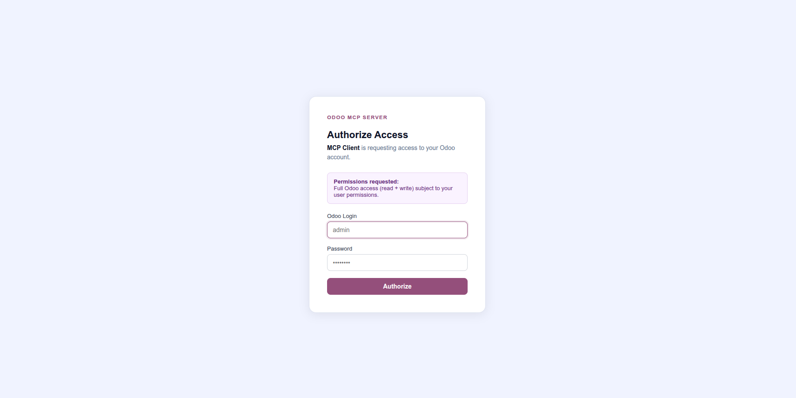
Tokens de acceso personal
Cada usuario puede generar sus propios tokens de acceso personal con alcance para herramientas de línea de comandos, pipelines de CI e integraciones sin interfaz. Cifrados con hash SHA-256 en reposo, mostrados solo una vez.
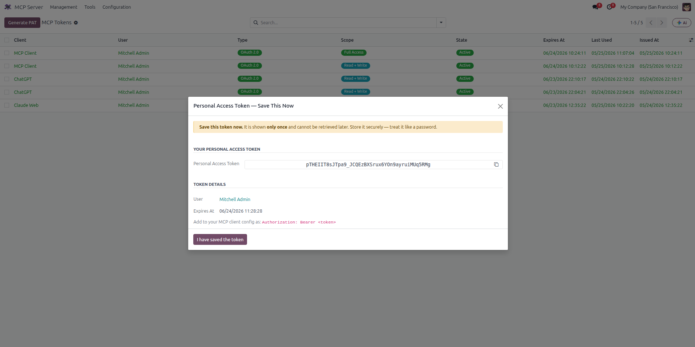
Gobernanza de tokens
Configura el alcance por token (solo lectura, lectura-escritura, administrador), lista de modelos permitidos, lista de campos permitidos, lista de IP permitidas/denegadas y captura de carga útil para auditoría — acceso de mínimo privilegio por defecto.
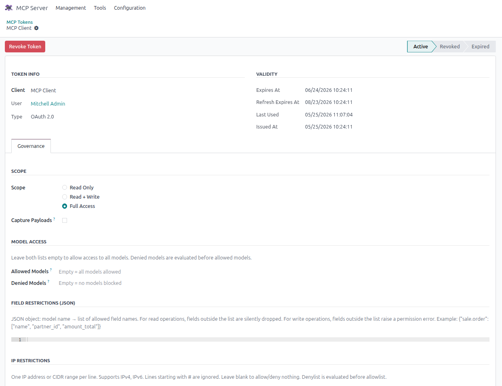
Rastro de auditoría de sesiones
Cada sesión MCP se registra con el tipo de transporte, la dirección IP, el número de llamadas a herramientas, la duración y (opcionalmente) las cargas útiles completas de solicitud/respuesta con ocultación de PII.
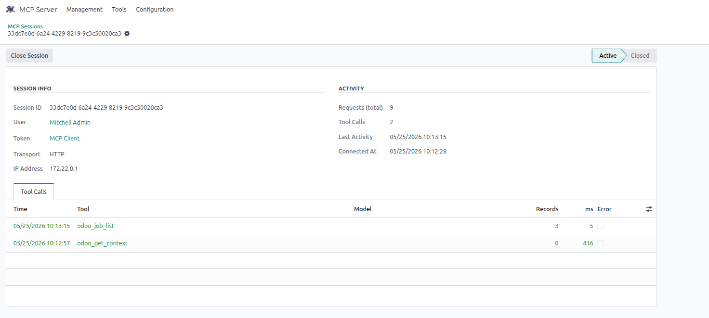
Cola de trabajos asíncronos
Delega el trabajo pesado — actualizaciones masivas, exportaciones masivas, automatizaciones de varios pasos — a una cola en segundo plano. Consulta el progreso, inspecciona las cargas útiles, reintenta los fallos y devuelve los resultados al cliente de IA sin alcanzar los límites de tiempo de espera HTTP.
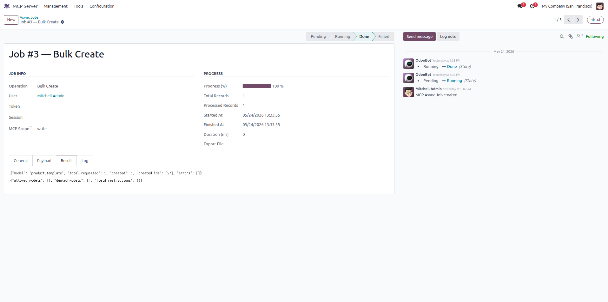
Páginas de portal generadas por IA
Pídele a Claude que "cree un tablero de envíos en /mcp-page/shipping" y obtén una página pública y adaptable a móviles, renderizada en el servidor a partir de datos de Odoo en vivo — tarjetas KPI, visualizaciones de ECharts y tablas interactivas, sin necesidad de trabajo de front-end.
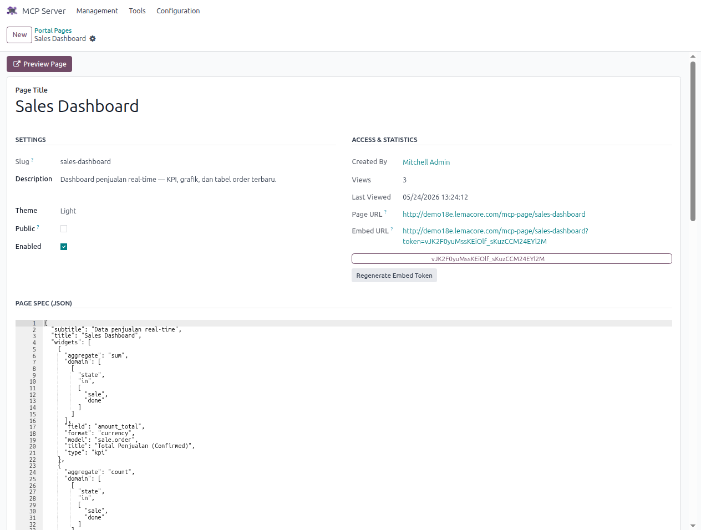
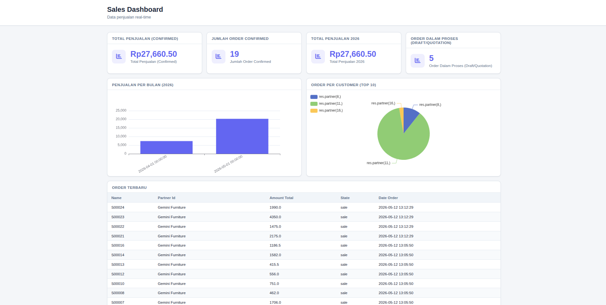
Generador del prompt al módulo
Describe el módulo que necesitas en lenguaje natural. Claude produce una especificación validada, el generador construye un módulo de Odoo completo (modelos, seguridad, vistas, menús) y puedes instalarlo directamente o descargar el ZIP para revisarlo.
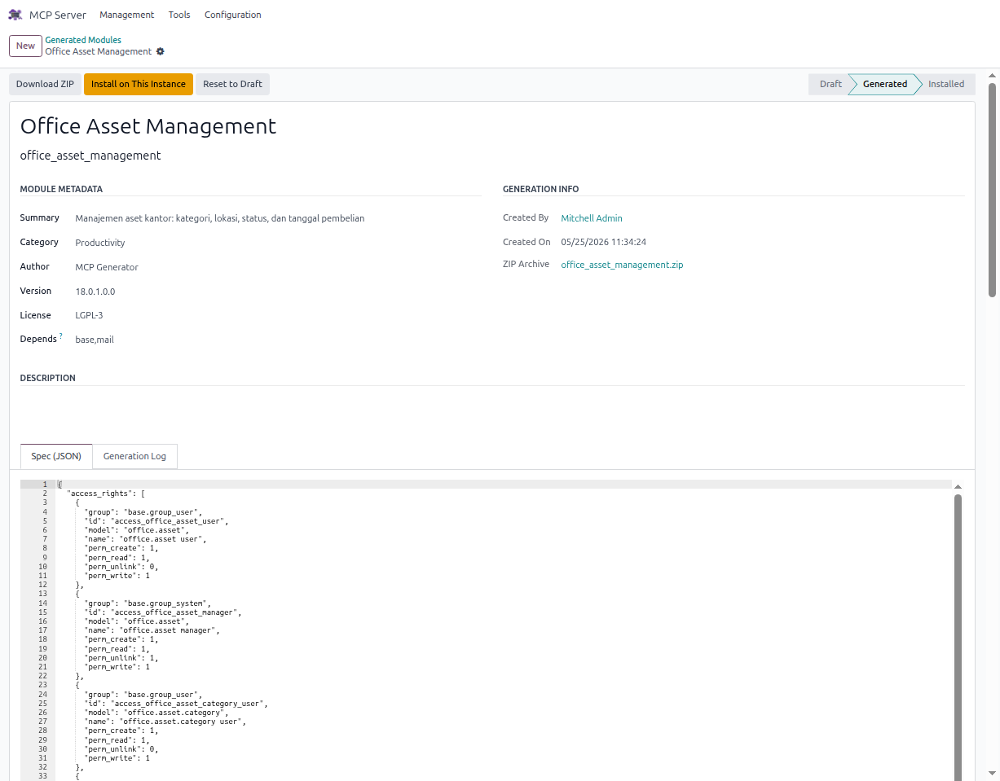
Un solo panel de configuración para todo lo de MCP
Gestiona políticas de retención, límites de tasa, caché de Redis, TTL de la caché de esquema y el indicador de función del generador de módulos — todo desde una única pantalla dentro de la Configuración de Odoo. No se requiere ninguna interfaz de administración externa.
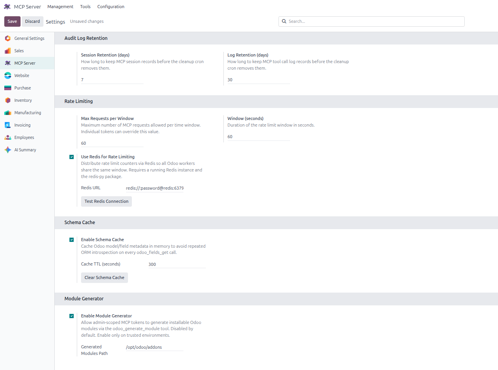
Conversaciones con agentes de IA
Conversaciones reales con Claude consultando datos de Odoo en vivo — busca registros, crea pedidos de venta, publica mensajes en el chatter, genera informes, todo mediante lenguaje natural.
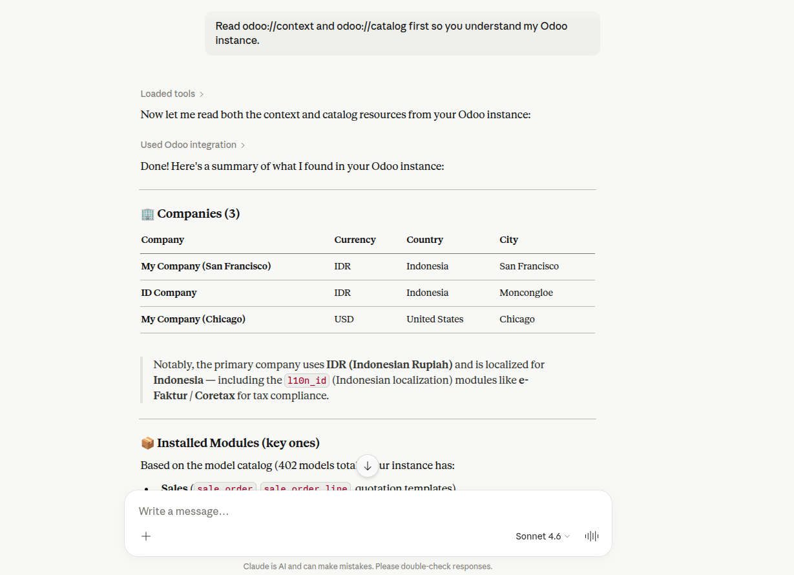
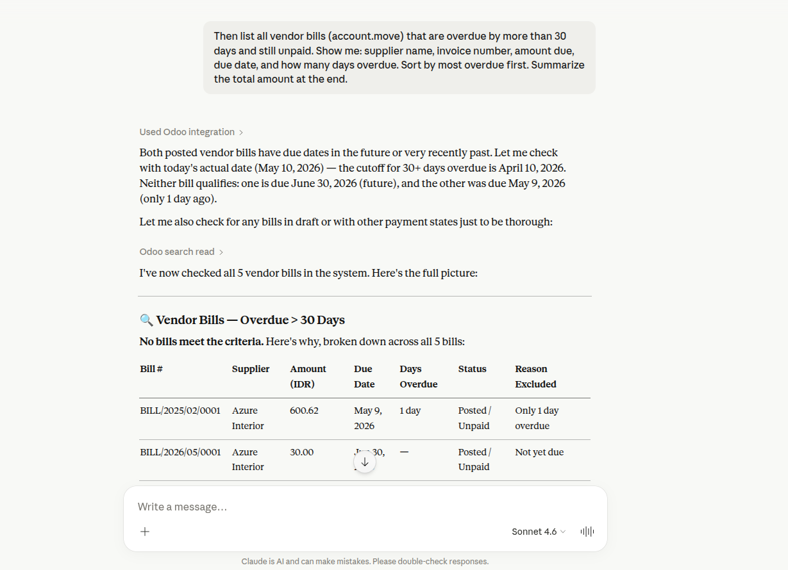
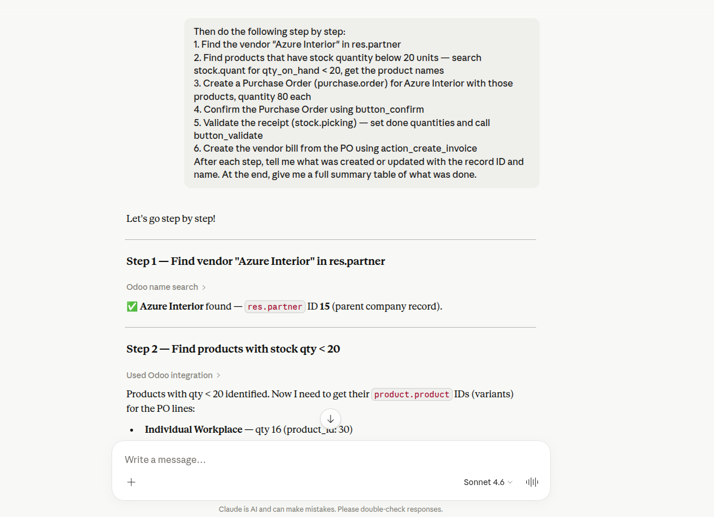
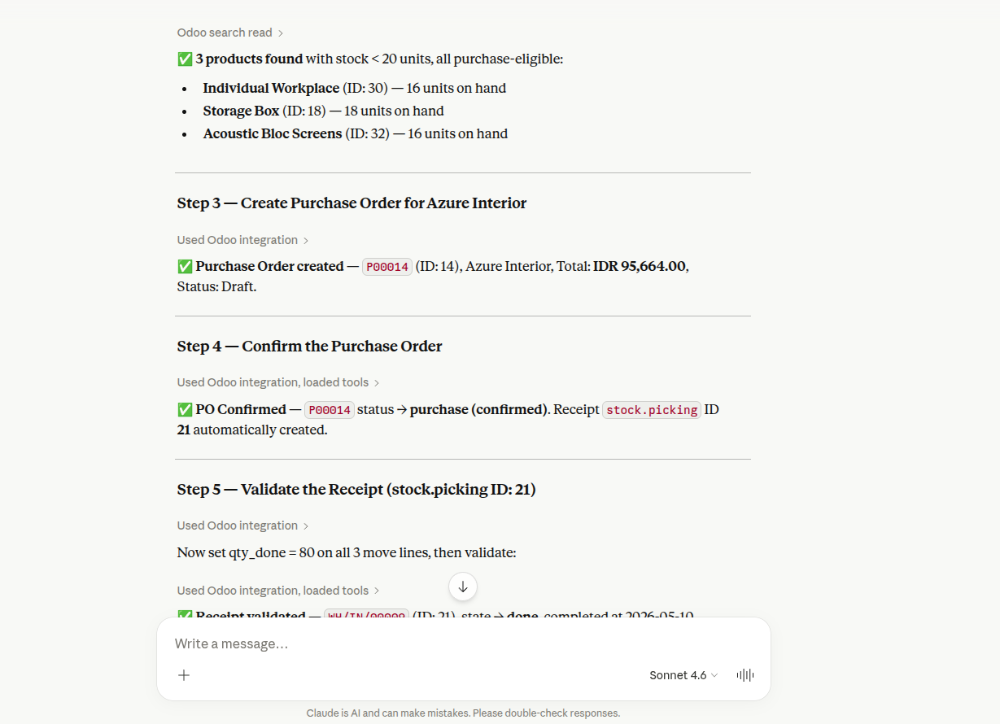
Acceso móvil
Pregúntale a Claude desde tu teléfono.
Obtén datos de Odoo en vivo en segundos.
Sin VPN. Sin pantalla de inicio de sesión de Odoo. Sin informes que ejecutar. Solo abre Claude en tu teléfono, haz una pregunta en lenguaje natural,
y recibe datos de ERP en vivo al instante — desde cualquier lugar, en cualquier dispositivo.
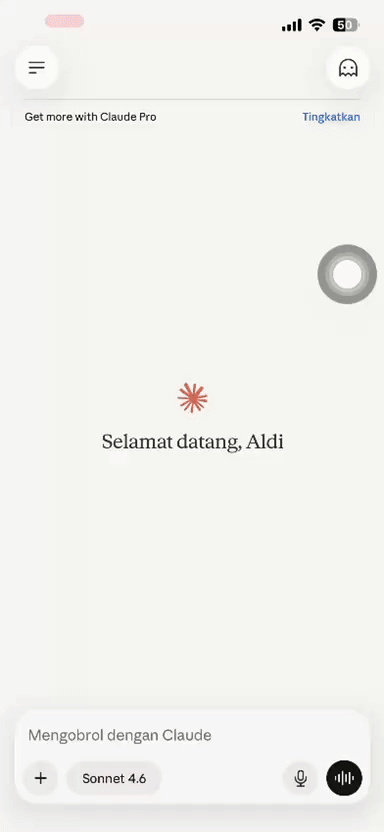
Haz clic para abrir a tamaño completo
📱
Cualquier dispositivo, en cualquier lugar
Teléfono, tablet o escritorio. La conexión de Claude sigue al usuario — no al dispositivo ni a la red de la oficina.
💬
Consultas en lenguaje natural
"¿Cuáles son mis facturas pendientes?" — Claude consulta Odoo y devuelve una respuesta clara y estructurada en segundos.
🔒
Totalmente gobernado
Alcances por clave, ACL de Odoo y registros de auditoría — cada consulta móvil está controlada, es rastreable y de mínimo privilegio.
Funciones
Lo que obtienes
Conectividad y autenticación
🔐 OAuth 2.0 + PKCE
Flujo de código de autorización conforme al estándar, con PKCE S256, registro dinámico de clientes (RFC 7591), rotación de tokens de refresco y autodescubrimiento mediante los endpoints /.well-known.
🔑 Tokens de acceso personal
Gestión de tokens en autoservicio. Cada usuario genera sus PAT para integraciones sin interfaz. Se guardan con hash SHA-256 y se muestran una sola vez al crearlos.
⚡ Doble transporte
Transporte Streamable HTTP (especificación MCP 2025-03-26) más SSE heredado — funciona con Claude Desktop, ChatGPT, Cursor, Gemini, n8n, LangChain y cualquier cliente compatible con MCP.
Gobernanza y auditoría
🛡️ Alcance por token
Solo lectura, lectura+escritura o administrador. Limita el radio de impacto de cada token. Combínalo con la lista de modelos y de campos permitidos para un acceso preciso de mínimo privilegio.
🌐 Listas de IP permitidas y denegadas
Restricciones de IP por token basadas en CIDR. Limita los tokens a la red de tu oficina, al rango de tu VPN o a un servidor de automatización concreto.
🔎 Rastro de auditoría + ocultación de datos
Cada llamada a una herramienta se registra con su duración, número de registros y resultado. Captura opcional de la carga útil con ocultación automática de datos personales (contraseñas, tokens, números de identidad, tarjetas de crédito).
Capacidades avanzadas
📊 Herramientas de reportes BI
Siete herramientas de análisis en una sola llamada: tablas dinámicas, series de tiempo con relleno de huecos, ranking top-N, retención por cohortes, conversión de embudo y exportaciones CSV y XLSX.
🌍 Páginas de portal
Tableros públicos compartibles con tarjetas KPI, visualizaciones ECharts y tablas. Renderizados en el servidor, siempre en vivo, adaptables a móvil e incrustables mediante URL firmada.
⚙️ Cola de trabajos asíncronos
Envía actualizaciones masivas, exportaciones de más de 100 000 registros o llamadas a métodos pesados y consulta su estado. Un cron en segundo plano procesa los trabajos respetando el alcance y las restricciones del token.
Infraestructura
Despliegue y rendimiento
Diseñado desde cero para producción, con escalabilidad horizontal y observabilidad.
🚀 Escalabilidad horizontal
- Funciona con 1 worker, 10 workers o más de 100 workers
- Límite de tasa distribuido respaldado por Redis (sin coordinación adicional)
- Caché compartida de esquemas de modelos entre todos los workers
- No requiere afinidad de sesión ni sesiones persistentes
- Respaldo automático si Redis no está disponible
⚡ Pruebas de rendimiento
- Solicitudes en caché: ~2 ms (96 % más rápidas)
- Solicitudes sin caché: ~50-100 ms (estándar)
- Rendimiento: 4 veces mayor con caché
- Tasa de aciertos de caché: 80-90 % habitual
- Percentiles de latencia: p50: 3 ms, p95: 25 ms, p99: 80 ms
Lo que obtienes
Capacidades
Pensado para conectar la IA de forma segura, con gobernanza, mínimo privilegio y herramientas predecibles.
🔧 Capacidades principales
- Endpoint JSON-RPC estilo MCP para descubrir y ejecutar herramientas
- Herramientas CRUD para operaciones de lectura y escritura controladas
- Descubrimiento y descripción de modelos para la planificación del agente
- Ayudantes de reportes/BI (tabla dinámica, series de tiempo, top-N, cohortes, embudo, exportación)
- Páginas de portal en /mcp-page/<slug> (KPI, gráficos, tablas)
- Generador de módulos con especificaciones validadas + módulos ZIP instalables
- Herramientas por lotes y asíncronas para flujos de varias llamadas y trabajos largos
🛡️ Salvaguardas
- Alcances por clave y ACL/reglas de registro estándar de Odoo
- Listas de campos permitidos y filtros de dominio para el mínimo privilegio
- Límites de tasa distribuidos con Redis (o respaldo en memoria)
- Rotación de tokens con periodos de gracia sin interrupciones
- Caché de esquema con invalidación automática
- Registros de auditoría con captura opcional de la carga útil y política de retención
Conecta varios LLM y frameworks de agentes: Claude, ChatGPT, Gemini, LLM propios, LangChain y crewAI.
Arquitectura del sistema
Integración de extremo a extremo
Cliente de IA → token OAuth o Bearer → endpoint /mcp → control de gobernanza → despachador de herramientas → datos de Odoo en vivo
Modos de transporte
Especificaciones técnicas
Construido sobre los estándares de Odoo 19
📦 Dependencias
- base, web, mail
- Opcional: redis-py (para el límite de tasa distribuido)
- Opcional: xlsxwriter (para la exportación XLSX)
🖥️ Despliegue
- Odoo Community y Enterprise
- Odoo.sh (PaaS)
- On-Premise con varios workers
⚡ Rendimiento
- Caché de esquema para fields_get / get_models / get_views (TTL configurable)
- Límite de tasa distribuido con Redis y respaldo en memoria
- Invalidación automática al cambiar el esquema, expulsión LRU a partir de 1000 entradas
🔒 Seguridad
- Tokens Bearer con hash SHA-256, caducidad de 30 días (acceso) / 90 días (refresco)
- Alcance por token, lista de modelos permitidos, lista de campos permitidos, listas de IP permitidas y denegadas
- Opción para exigir HTTPS, preflight CORS, revocación de tokens según RFC 7009
Guías de integración
Cómo conectarse
Conecta tu cliente de IA favorito a los datos de Odoo en vivo en minutos. Sin escribir código.
Paso a paso
Conectar con Claude Web
Usa Claude.ai con MCP para consultar datos de Odoo, crear registros, ejecutar reportes y construir tableros — directamente desde tu navegador.
- Instala Servidor MCP para Odoo desde el menú Aplicaciones.
- Ve a Servidor MCP → Configuración y copia la URL de tu endpoint MCP.
- En Claude.ai, abre la configuración de tu proyecto y agrega una nueva integración MCP.
- Pega el endpoint MCP de tu Odoo y autoriza mediante OAuth 2.0.
- Empieza a conversar — pídele a Claude que busque registros, cree facturas o construya un tablero.
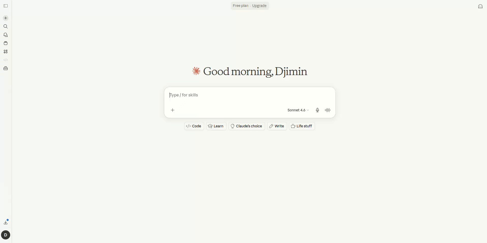
Paso a paso
Conectar con Grok
Grok admite conexiones MCP para usar herramientas. Vincúlalo a tu instancia de Odoo y consulta los datos de tu negocio en lenguaje natural desde la interfaz de Grok.
- Genera un token de acceso personal desde tu perfil de usuario de Odoo.
- En la configuración de herramientas de Grok, agrega un nuevo servidor MCP con la URL del endpoint de tu Odoo.
- Ingresa tu token Bearer para la autenticación.
- Grok descubrirá automáticamente todas las herramientas de Odoo disponibles mediante tools/list.
- Pídele a Grok que traiga datos del CRM, ejecute análisis o genere un reporte.
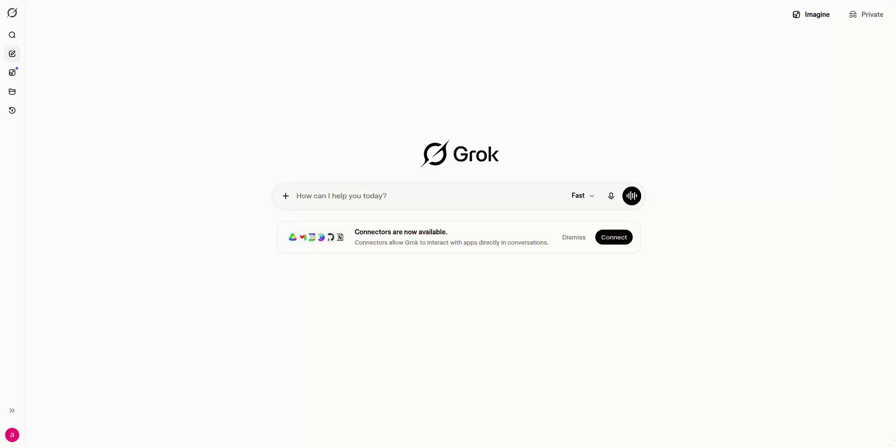
Paso a paso
Conectar con ChatGPT
ChatGPT admite servidores MCP mediante su sistema de conectores. Apúntalo al endpoint MCP de tu Odoo y dale acceso a los datos de tu ERP en vivo.
- Ve a Servidor MCP → Gestión → Tokens y crea un token con el alcance necesario.
- En la configuración de ChatGPT, entra en Connectors (conectores) y agrega una nueva conexión MCP.
- Ingresa la URL MCP de tu Odoo y pega tu token Bearer.
- ChatGPT descubrirá automáticamente todas las herramientas desde el endpoint tools/list.
- Inicia un chat: «¿Cuáles son mis 5 mejores clientes por ingresos este mes?»
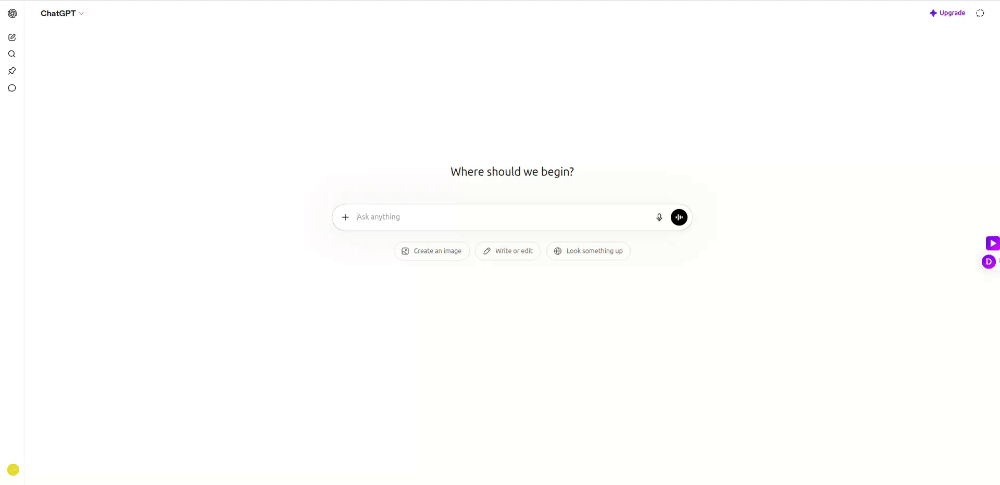
Historial de versiones
Novedades de la versión
Preguntas frecuentes